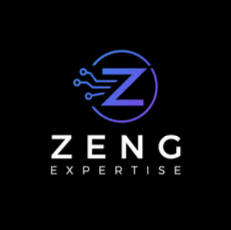

- Entreprise
- ZENG Expertise (SASU)
- Lieu
- Lyon 6e — en distanciel
- Secteur
- Ingénierie des données et IA
- Clientèle
- Banque et finance
- Encadrement
- Le dirigeant, consultant data senior
- Période
- 4 mai → 5 juin 2026
- Durée
- 5 semaines · 200 heures
Effectué
Conception et développement back-end d'un moteur d'analyse de données crypto
Assistant développeur data & back-end
Une preuve de concept destinée à devenir un service du cabinet : analyser des données de cryptomonnaies à partir d'articles et d'historiques de marché, en s'appuyant sur une architecture RAG. Sur demande du tuteur, la mission s'est progressivement recentrée sur cette brique IA, devenue la spécialité de terrain de ce stage.
- Architecture RAG — chaîne complète de récupération augmentée : indexation des sources, recherche du contexte pertinent, puis appel du modèle de langage pour produire l'analyse
- Génération d'embeddings — intégration d'une API d'IA et stockage vectoriel avec pgvector
- Moteur de recherche hybride — combinaison de la recherche classique et de la recherche sémantique
- Conception du schéma SQL — analyse de la structure des fichiers JSON via un script Python, puis modélisation de la base PostgreSQL
- Pipeline ETL — automatisation de l'extraction, du traitement et du chargement des données de marché
- Optimisation des index — réduction des temps de réponse sur les requêtes d'exploitation
- Documentation technique — guide utilisateur et documentation développeur pour chaque fonctionnalité
PythonPostgreSQLpgvectorGitGitHubVS CodeTailscaleRaspberry Pi
Compétences du référentiel mobilisées
Gérer les donnéesConcevoir et développer une solution applicativeTravailler en mode projetOrganiser son développement professionnel
Rapport de stage Attestation Le détail complet